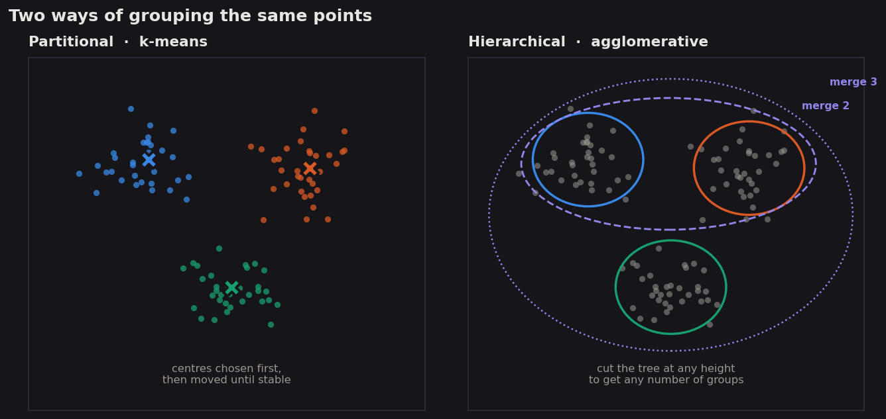
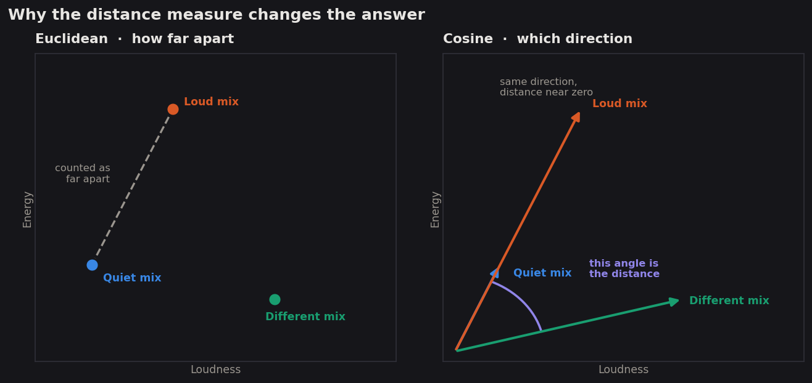
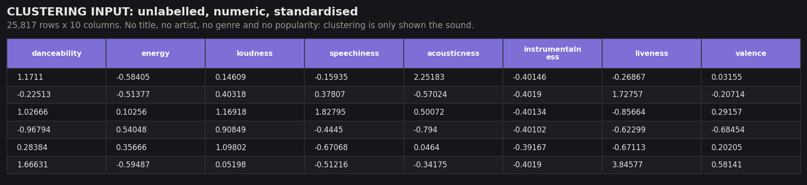
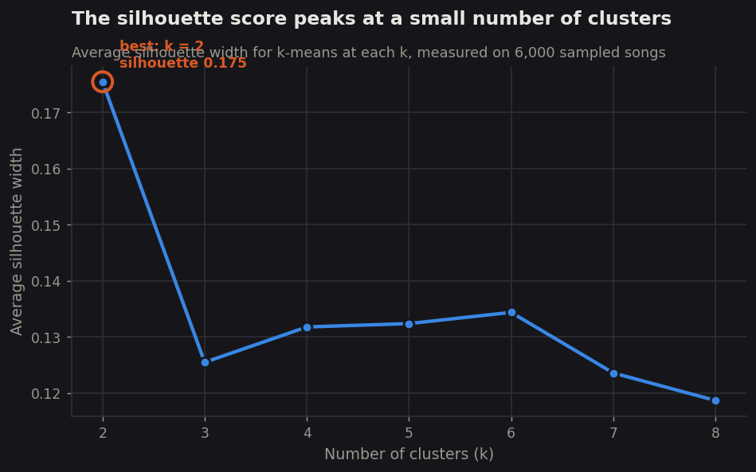
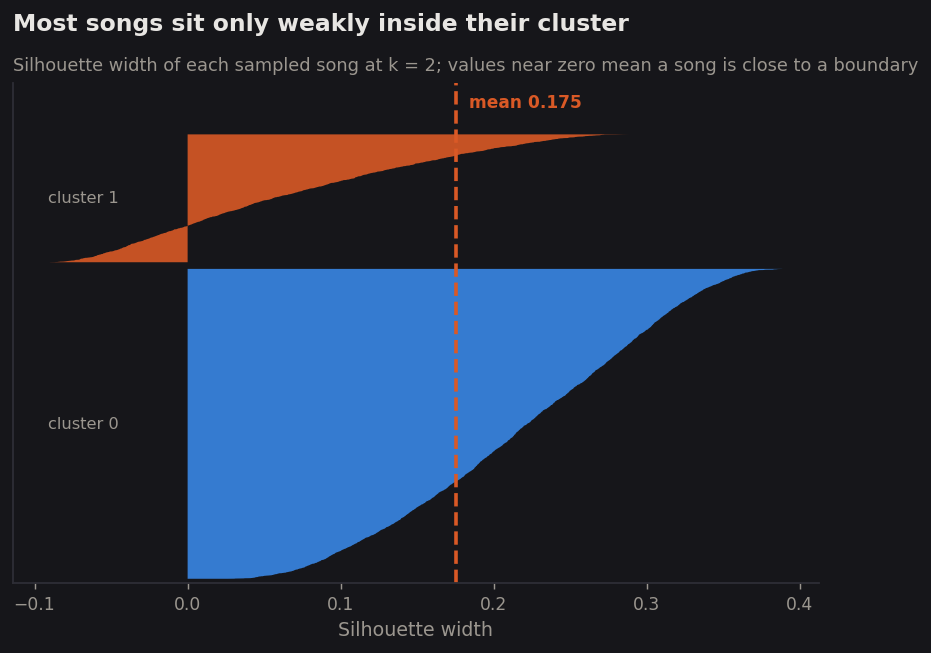
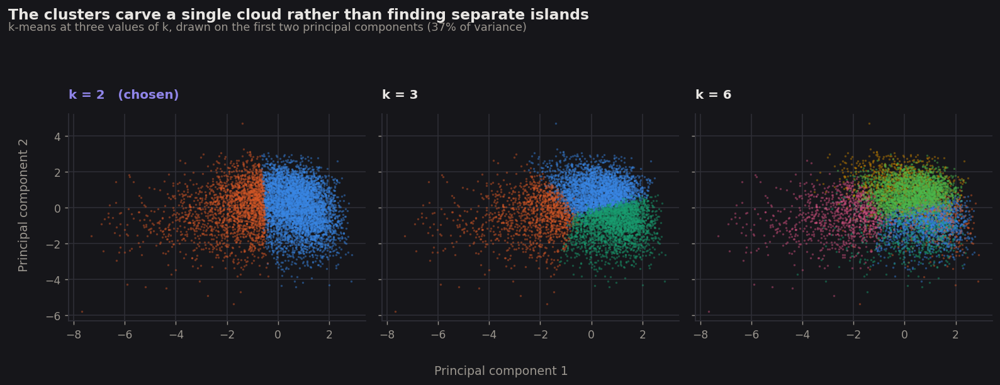
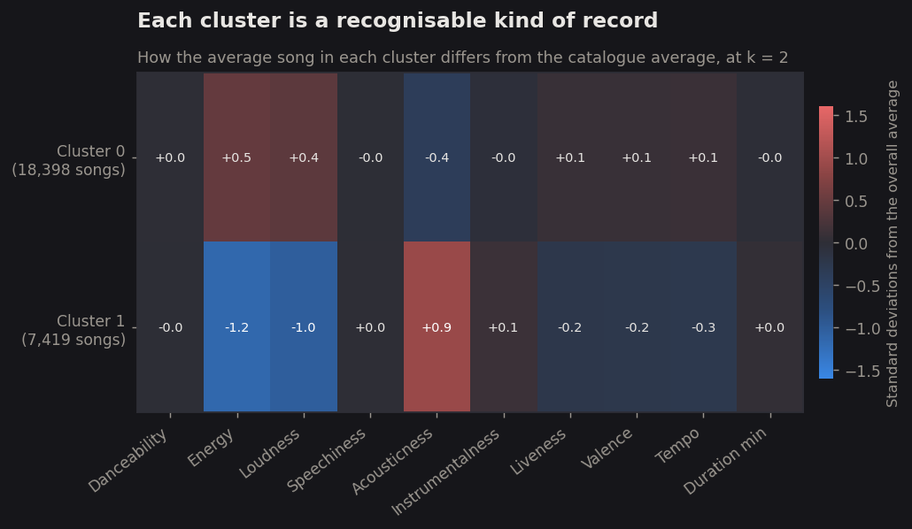
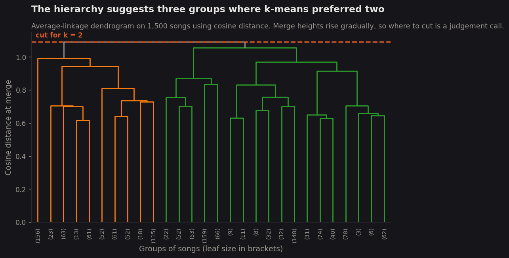
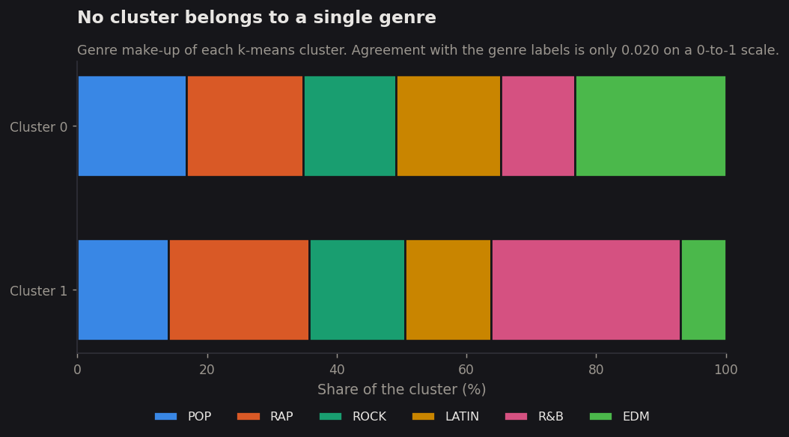

Clustering
If the six genres the industry uses describe real, audible differences, then an algorithm that has never seen a genre label should rediscover something like them from the sound alone. This tab puts that to the test twice over, with two different clustering methods and two different notions of distance.
Overview
Clustering is the part of machine learning that works without an answer key. Nothing is labelled, nothing is being predicted, and the algorithm is never told what it is looking for. It is handed a set of points and asked a single question: which of these belong together? The answer depends entirely on what "together" is taken to mean, which is why the choice of distance measure matters as much as the choice of algorithm. For this project the points are songs, and the dimensions of the space they live in are the measured qualities of each recording — how loud, how fast, how acoustic, how danceable. A cluster, in that space, is a region where songs pile up: a kind of record that gets made often.
Two families of clustering are used here, and they work in genuinely different ways. Partitional methods, of which k-means is the best known, require the number of groups to be decided in advance. k-means places that many centres in the space, assigns every song to its nearest centre, moves each centre to the middle of whatever it just collected, and repeats until nothing moves. It is fast and it scales, but it has to be told how many groups to look for, and it will happily produce exactly that many whether or not they exist. Hierarchical clustering makes no such commitment. Every song starts as its own group, the two closest groups merge, and the process repeats until a single group remains — leaving behind a tree that records the entire merge history. That tree can be cut at any height, which means the number of clusters becomes something read off the result rather than supplied to it.

The distance measure deserves as much attention as the algorithm. k-means here uses Euclidean distance, the ordinary straight-line distance between two points, which is the only measure its averaging step is mathematically consistent with. The hierarchical clustering instead uses cosine distance, which ignores magnitude entirely and compares only the direction two songs point in. The distinction is not academic for music. A quiet acoustic recording and a loud, heavily compressed one can have the same balance of qualities while sitting far apart in absolute terms; Euclidean distance calls them different, and cosine distance calls them the same shape at a different volume. Using both means the project gets to see which groupings survive a change in what "close" means.

What this is being used to discover is specific. The Module 1 exploration found that genres overlap heavily on every pair of measured qualities, but overlap on two axes at a time is not proof that the genres are inseparable on all ten at once. Clustering settles that properly: if groups discovered from the sound alone line up with the genre labels, then genre is audible and the industry's categories track something real in the recordings. If they do not, the categories are doing something else — organising audiences, marketing, and history rather than sound. The same clusters can then be checked against popularity, which asks whether the kinds of record that get made often are also the kinds that get heard.
Data Prep
Clustering requires a particular shape of data, and the requirements are strict. Every column must be numeric, because the algorithms work by computing distances and there is no meaningful distance between the words "pop" and "rock". Nothing may be missing, because a single absent value makes a distance undefined. And critically, the data must be unlabelled: the whole point is to find structure without being told the answer, so anything that encodes the answer has to be withheld. If genre were left in the matrix, discovering that the clusters match genre would prove nothing at all.
The input is therefore a strict subset of the cleaned song table. Track name, artist, album, genre, subgenre, popularity score, popularity band and every derived label were all removed, leaving ten numeric measurements per song: danceability, energy, loudness, speechiness, acousticness, instrumentalness, liveness, valence, tempo and duration. Those ten columns were then standardised to mean zero and standard deviation one. Without that step the clustering would be decided almost entirely by tempo and loudness, which run to values in the hundreds and the negative tens respectively, while danceability and valence never leave the range zero to one — the algorithm would be measuring units rather than music.

Clustering input
The unlabelled, standardised numeric matrix shown above, exactly as the algorithms received it.
clustering_input.csv →Cluster assignments
Each song's cluster, rejoined to the labels that were withheld, so the result can be checked.
clustering_results.csv →Code
Written in Python 3, using scikit-learn for k-means and the silhouette measures,
scipy for the hierarchical linkage and the cosine distance matrix, and
pandas and matplotlib for everything else. Every run is seeded so the
figures reproduce exactly. The full numeric output is written to a JSON file, which is where every
figure quoted on this page comes from.
Clustering
k-means across seven values of k, silhouette selection, and cosine-distance hierarchical clustering.
06_clustering.py →Measured values
Every number quoted on this page, written out by the script.
clustering_metrics.json →Results
k-means was run at seven values of k, from two through eight, and each result scored with the silhouette measure. Silhouette width compares how close a song sits to its own cluster against how close it sits to the nearest rival cluster, on a scale running from −1 to 1. A score near 1 means a song is comfortably inside its group; a score near 0 means it sits on a boundary and could belong to either side.



What the two clusters actually contain is more interesting than how well separated they are. Comparing each cluster's average song against the catalogue average shows that the split is not arbitrary — it runs along one clear axis.

Hierarchical clustering was then run as an independent check, on a random sample of 1,500 songs because a full distance matrix over 25,817 songs would require more than 300 million pairwise values. Cosine distance was used as the measure and average linkage as the merge rule.

Measured formally, the agreement between the hierarchical and k-means solutions is 0.046 on the adjusted Rand index, a scale on which 0 means no more agreement than chance and 1 means identical groupings. Two methods looking at the same songs, with different distance measures, barely recovered the same structure. The comparison that matters most, though, is against the labels neither algorithm was shown.

Conclusions
The clearest finding is a negative one, and it answers a question this project set out to ask. Genre is not audible in these measurements. An algorithm given ten numbers describing every song and no hint of what any of them were called recovered groupings that match the industry's genre labels at 0.020 on a scale where zero means chance. Whatever separates pop from rock from Latin music, it is not something captured by how loud, fast, danceable or acoustic a recording is. The categories that organise record shops, radio formats and streaming playlists appear to be categories of audience, tradition and marketing rather than categories of sound.
The one real division the data does contain is about production rather than style. The single strongest split separates loud, energetic, electric records from quieter, more acoustic ones, and it cuts straight across every genre: there are hushed rap records and abrasive pop records, and the algorithm groups each with its sonic neighbours rather than its labelled peers. That axis is worth naming because it is the same one that will reappear in the next tab from a completely different method, which is a reassuring sign that it is a property of music rather than of one algorithm.
Equally striking is what the clusters fail to explain. The loud group averages 40.3 on the popularity scale and the quiet group 41.5 — a difference of barely one point out of a hundred. The biggest structural division in how records are made has essentially no bearing on whether they get heard. Taken together with Module 1's finding that no single measured quality correlates with popularity above 0.14, a consistent picture is forming: the audible properties of a song describe what kind of record it is, and say remarkably little about what happens to it afterwards.
There is a methodological lesson here too, and it is worth stating plainly rather than hiding. A silhouette score of 0.175 is weak. It would have been easy to report "the best k is 2" and move on, as though the method had found something solid, but the honest reading is that k = 2 is the least bad option among several poor ones. The song space is a continuum, not a collection of types, and the two methods disagreeing about whether it holds two groups or three is exactly what a continuum looks like when you insist on dividing it. That shape is the reason the supervised methods in the modules ahead are worth running: if the structure were obvious, it would already have shown up here.